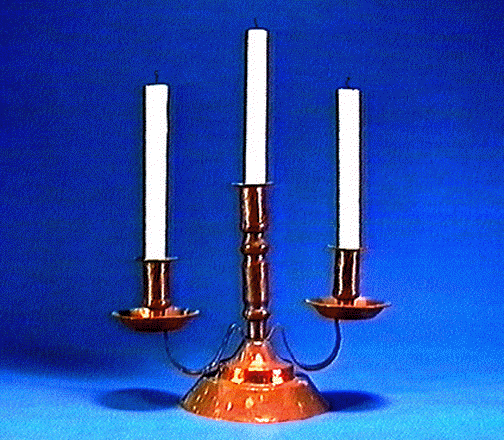

CANDELABRO

Descripción:
Candelabro de tres luces, con base en forma de plato invertido.
Materiales:
Cobre
Procedencia del objeto:
Instituto de Comercio Exterior, México.
Función:
Decoración, ajuar doméstico.
Medidas:
54 cm. de altura.